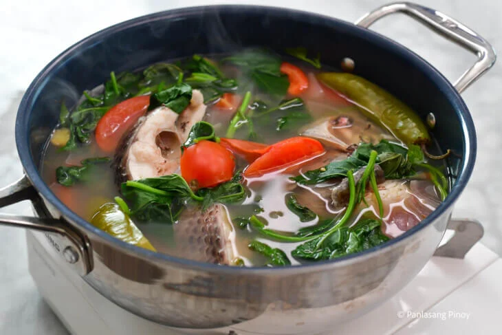

Kusido is a clear Filipino fish soup that’s often made with tilapia,
tomatoes, onion, and leafy greens like sweet potato tops. It has a light
broth with a citrusy kick from calamansi, balanced by the natural sweetness
of fresh tomatoes and the zing of ginger. It’s similar to sinigang in that it’s
a bit tangy, but it’s more subtle and straightforward.

Ingredients for Kusido
- 2 lbs. tilapia, sliced into serving pieces
- 3 pieces tomatoes, wedged
- 1 piece onion, sliced
- 3 pieces long green peppers
- 3 thumbs ginger, crushed
- 1 bunch sweet potato leaves (talbos ng kamote)
- ¼ cup calamansi juice
- 1 quart water
- Salt to taste
Procedure
- Boil
the water pour the water into a cooking pot and bring it to a boil.
- Add the Aromatics
Add the tomatoes, onion, ginger, and long green peppers. Let it simmer for around 3 minutes
so the flavors start to develop.
- Add the Fish
Carefully place the tilapia into the pot. Simmer for 7 to 10 minutes or until the fish is fully
cooked and flakes easily.
- Add the Calamansi Juice
Pour in the calamansi juice and stir gently to distribute the flavor.
- Season with Salt
Add salt to taste. Adjust as needed to get the right balance.
- Add the Greens
Start light on the salt and calamansi, then build it up to your liking.
Back to the homepage